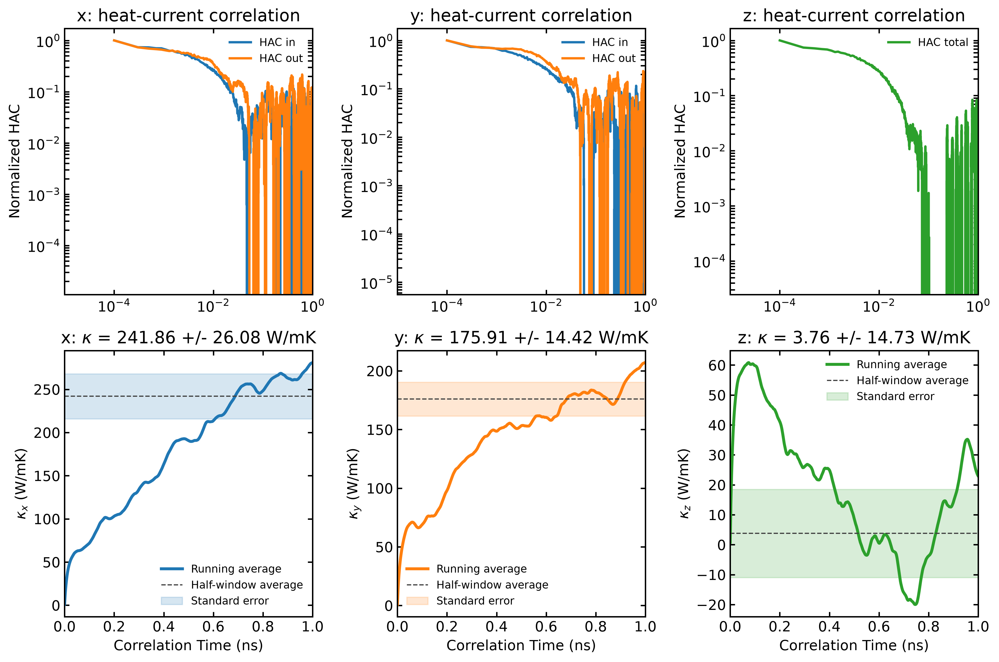
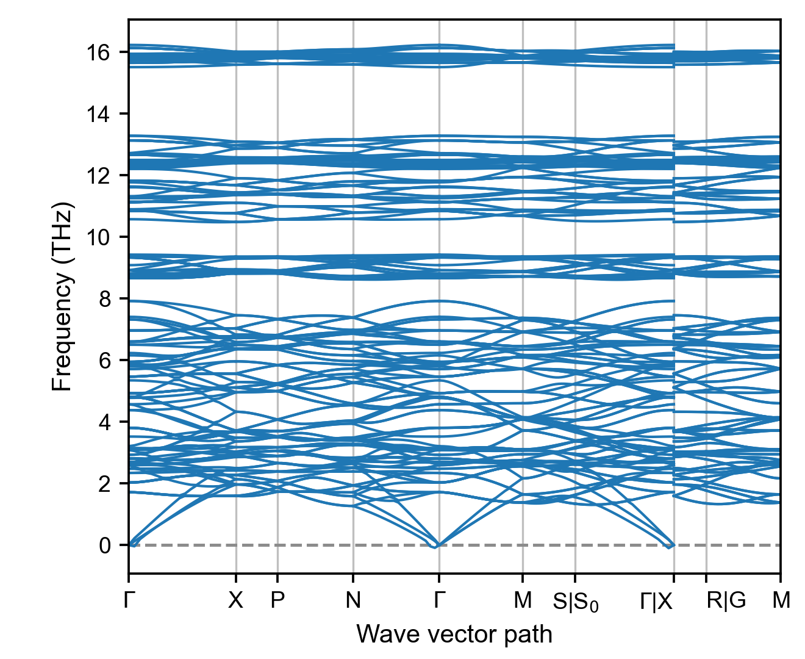
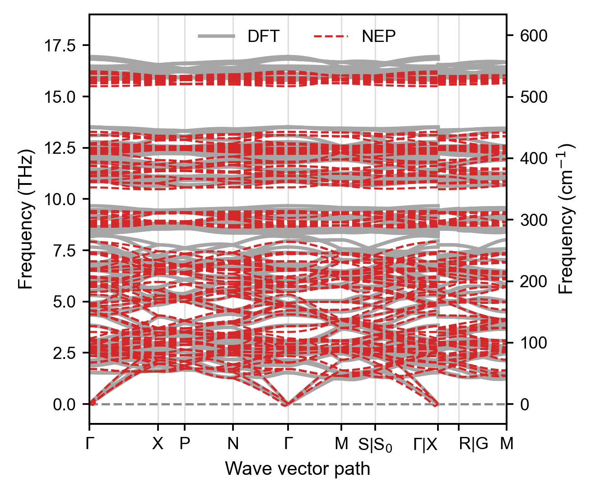
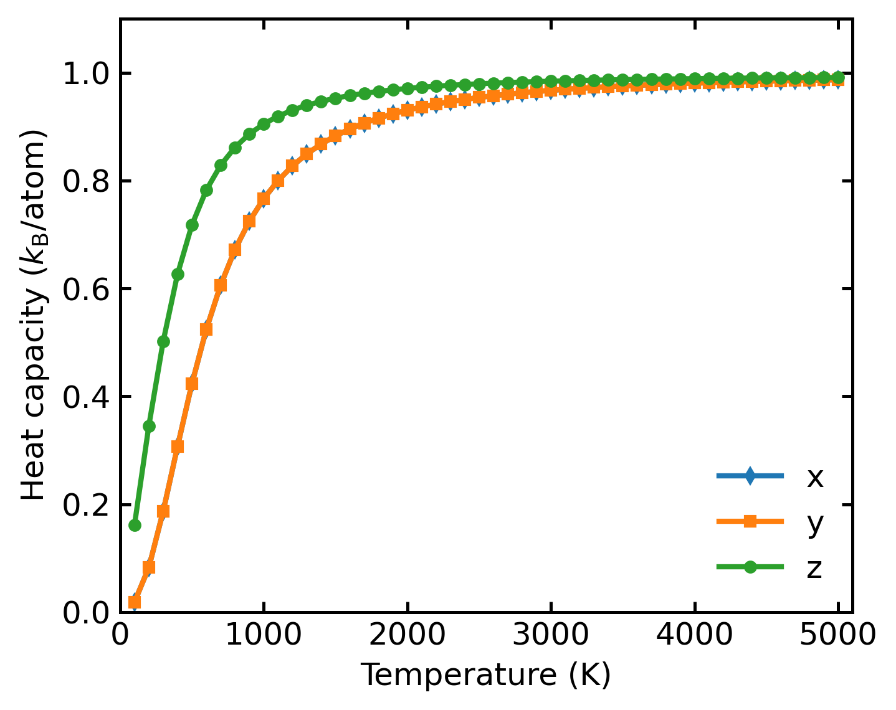

Heat Transport
The save options are --save (figure) and --save-data (processed data); the older forms save and save_data are still accepted.
emd (plt_emd.py)
Analyzes and plots thermal conductivity from equilibrium molecular dynamics (EMD).
Input Files: EMD output files from GPUMD
gpumdkit.sh -plt emd x --save-data # export processed data
gpumdkit.sh -plt emd x --save --save-data # save the figure and data--save saves the figure as emd.png. --save-data saves the processed
arrays as data_emd.npz and tab-separated data_emd.txt; the two options are
independent.

emd2 (plt_emd2.py)
Plots heat-current correlation and total EMD thermal conductivity in the x, y,
and z directions in one figure. It uses the same run.in and hac.out files
and averaging rule as plt_emd.py.
Input Files: EMD output files from GPUMD
gpumdkit.sh -plt emd2 # Display all directional results
gpumdkit.sh -plt emd2 save # Save as emd2.pngThe HAC panels use a logarithmic correlation-time axis and retain the signed HAC values on the y-axis. A physically zero direction is shown as a zero curve. The reported uncertainty follows the legacy half-window spread divided by the square root of the number of HAC repeats; it is not an independent- trajectory standard error.

nemd (plt_nemd.py)
Visualizes non-equilibrium molecular dynamics (NEMD) thermal transport properties.
Input Files: NEMD output files from GPUMD
Parameters:
| Parameter | Description |
|---|---|
real_length |
Real length of heat transfer zone in nm (set to Auto for auto-calculation) |
scale_eff_size |
Scale factor for effective cross-sectional area (default: 1). For 3D bulk: use 1. For low-dimensional systems with vacuum: S_box / S_eff |
cutoff_freq |
Cutoff frequency for SHC calculation in THz (default: 60) |
--save |
Optional, save the plot as nemd.png |
--save-data |
Optional, additionally export tab-separated data_nemd.txt and, when SHC data exist, data_shc.txt |
gpumdkit.sh -plt nemd [real_length] [scale_eff_size] [cutoff_freq] [--save] [--save-data]
gpumdkit.sh -plt nemd --save-data # use defaults and export data
gpumdkit.sh -plt nemd Auto 1 60 --save --save-data # save the figure and datadata_nemd.npz (and data_shc.npz when SHC data exist) are always written.

hnemd (plt_hnemd.py)
Plots homogeneous non-equilibrium molecular dynamics (HNEMD) results.
Input Files: HNEMD output files from GPUMD
Parameters:
| Parameter | Description |
|---|---|
scale_eff_size |
Scale factor for effective cross-sectional area (default: 1) |
cutoff_freq |
Cutoff frequency for SHC calculation in THz (default: 60) |
--save |
Optional, save the plot as hnemd.png |
--save-data |
Optional, save processed arrays as data_hnemd.npz and tab-separated data_hnemd.txt; when SHC data exist, also save data_shc.npz and data_shc.txt |
gpumdkit.sh -plt hnemd [scale_eff_size] [cutoff_freq] [--save] [--save-data]
gpumdkit.sh -plt hnemd --save-data # use defaults and export data
gpumdkit.sh -plt hnemd 1 60 --save --save-data # save the figure and data
viscosity (plt_viscosity.py)
Plots the stress autocorrelation and viscosity components from viscosity.out,
including diagonal and off-diagonal components.
Input Files: viscosity.out from the GPUMD viscosity calculation
gpumdkit.sh -plt viscosityPhonons
phonon (plt_phonon.py)
Plots a phonon band structure generated by calculator 414. The plotter reads
the q-point path and high-symmetry labels directly from a line-mode QPOINTS
file, so the path does not need to be repeated in the plotting script.
Input Files: A phonon data file (default phonon_NEP.dat) and QPOINTS
The calculation step is interactive:
gpumdkit.sh -> 4) Calculators -> 414) Calc phonon band structureThe Python prompts accept a primitive-cell structure (default PRIMCELL.vasp),
a NEP model (default nep.txt), a line-mode path (default QPOINTS), the
supercell, the displacement amplitude, and the output name (default
phonon_NEP.dat). The calculation requires phonopy in addition to the
usual GPUMDkit/Calorine dependencies.
Plot the result with:
gpumdkit.sh -plt phonon
gpumdkit.sh -plt phonon phonon_DFT.dat
gpumdkit.sh -plt phonon phonon_NEP.dat QPOINTS saveThe phonon data file is optional. If it is omitted, the plotter reads
phonon_NEP.dat; if only one file is supplied, the path file defaults to
QPOINTS.

phonon_comp (plt_phonon_comp.py)
Compares two or more phonon band-structure files. The legend is inferred from
the filename: phonon_NEP.dat becomes NEP, phonon_DFT.dat becomes DFT,
and phonon_MACE.dat becomes MACE.
gpumdkit.sh -plt phonon_comp phonon_DFT.dat phonon_NEP.dat save
gpumdkit.sh -plt phonon_comp phonon_DFT.dat phonon_NEP.dat phonon_MACE.dat \
--qpoints QPOINTS saveThe default path file is QPOINTS; use --qpoints FILE for another one. All files must use the same q-point sampling and the same number of bands.

pdos (plt_pdos.py)
Calculates and plots normalized VAC, PDOS, and Heat Capacity (Cv).
Input Files: model.xyz, run.in, dos.out, mvac.out
gpumdkit.sh -plt pdos
gpumdkit.sh -plt pdos save
Heat capacity output:
